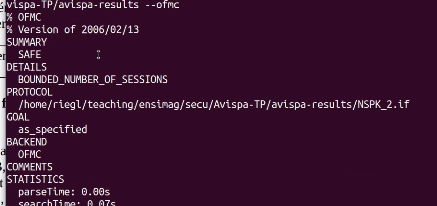
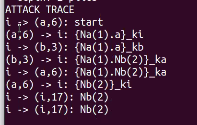

Soit le protocole suivant (Needham-Schroeder) A pour Alice et B pour Bob. ka et kb sont respectivement les clés publiques de A et B. On notera inv(ka) la clé privée de A. Na et Nb sont des nonces (nombres aléatoires uniques).
L’opérateur ’.’ est la concaténation de message.
A envoit son identite et un nombre Na vers B. Ces informations sont codés par la clé publique de B : juste B peut les decrypter. B décrypte puis genere Nb. Il réenvoit Na et Nb codés par la clé publique de A.
A réenvoie Nb vers B codé par kb
Si Na n’est pas secret un attaquant O peut reenvoyer vers B Na.Akb en lui disant qu’il est A. L’attaque de l’homme au milieu : MitM
On considère dans un premier temps une session unique entre A et B : session(A, B, ka, kb).
En d’autres termes, il n’y a qu’Alice et Bob, pas d’intrus présent, et nos deux interlocuteurs n’exécutent le protocole qu’une seule fois. Ceci est exprimé dans la partie environment du fichier HLPSL (il n’y a qu’Alice et Bob dans cet environnement).
Si on lance Avispa, on remarque que le SUMMARY est SAFE. Donc pas d’attaque possible.

On considère maintenant 3 sessions possibles en parallèle :
session(A, B, ka, kb) || session(A, I, ka, ki) || session(I, B, ki, kb)
Une session entre A et B, une session entre A et I et une session entre I et B, I étant l’intrus.
On note que A parle à B, mais aussi, volontairement à I en utilisant la clé de I, et de même I avec B.
Ce n’est donc pas exactement une attaque MitM où A et B ne seraient pas conscients de la présence d’un intrus furtif.
Si on lance Avispa on trouve qu’il y a un probleme :

En effet Nb n’est plus secret; il peut etre connu par I. Aussi, l’authentification de Bob aupres d’alice avec Na ne marche pas : on est UNSAFE.
L’idee est de rajouter dans l’etape 2 :
2. B → A: {Na.Na.B}ka
En e effet on est pas sur qui parle. En modifant cela dans l’automate partout dans Avispa on redevient safe.